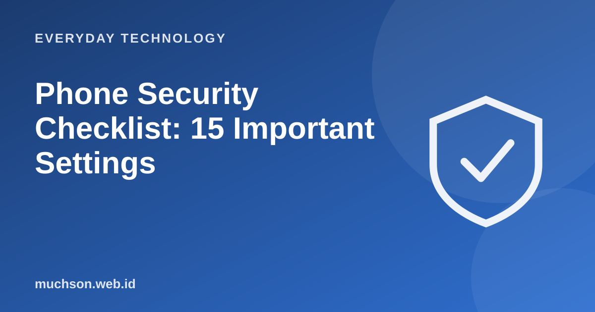

Home › Articles › Everyday Technology
Everyday TechnologyPhone Security Checklist: 15 Important Settings
A phone holds almost all your digital life: messages, photos, banking, passwords. Most of its protection is free in the settings and only needs switching on. Here is a list you can finish in half an hour.

Fifteen important settings
Text description of the diagram
- Your habits: Don't click carelessly, don't share codes
- Accounts and passwords: Unique passwords, two-step verification
- Apps and permissions: Only from the official store, only the permissions needed
- System and screen lock: Updates, PIN, biometrics
If the phone is lost
- Use "find my device" to locate, lock or erase it remotely.
- Contact your operator to block the SIM card.
- Change the passwords of important accounts and remove the device from the account's device list.
- Contact your bank to block mobile banking and digital wallet access.
- Report it to the authorities if needed.
FAQ
Is an iPhone safer than Android?
Both platforms offer good protection when updated and configured properly. User habits often matter more.
Do I need an antivirus app?
Built-in security features and the official store already protect a lot. An extra antivirus is optional, not a replacement for good habits.
How important is updating the phone?
Very important. Updates patch security holes that could be exploited.